早番と遅番の2交代制です。
- 出社
- 出社してすぐにアルコールチェックを行います。
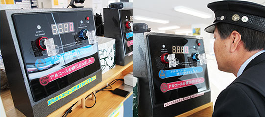
6:00
15:00
- 着替え
6:05
15:05
- 車両点検・点呼
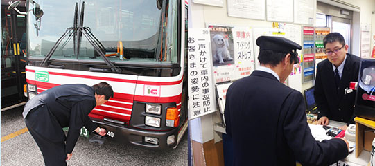
6:10
15:10
- 出庫
- 約4時間走行します。
6:30
15:30
- 中休み（車庫にて）
- 2時間ゆっくりしっかり休みます。お昼ごはん・夕ごはん済ませたり、仮眠を取ったりして過ごします。
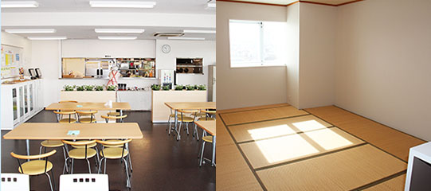
10:30
19:30
- 出庫
- 2時間半走行します。
12:30
21:00
- 入庫
- 乗った車両を洗車し、点呼時に今日の日報を提 出します。すべて終わったところで着替えます。
- 乗った車両を洗車し、点呼時に今日の日報を提 出します。すべて終わったところで着替えます。
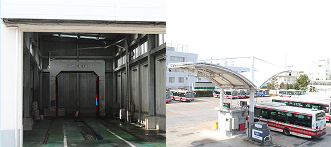
15:00
24:00
- 退社
- お疲れ様でした。
15:30
24:30
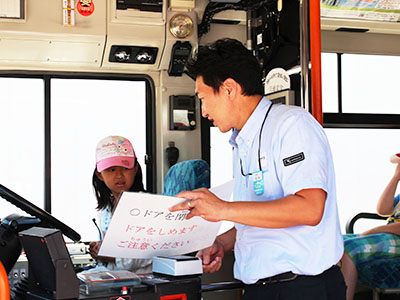
- 地域の方々の足となれること
- 通勤や通学でご利用される方はもちろん、 大型バスの通れない狭い路地裏ではコミュニティバスが運行し、 地域に根ざしたバス会社となっています。
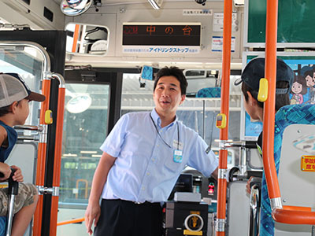
- 公共交通機関を担う一員として
- 多くのお客さまを安全に目的地まで運ぶ責任を担います。 お客さまから「ありがとう」の感謝のことばをいただくとやりがいを感じます。
運転士は２名乗務で交替制となります。
- 1 日目
- 出勤・着替え等
- 東北の秋田、四国の高知など行先に応じて準備をします。
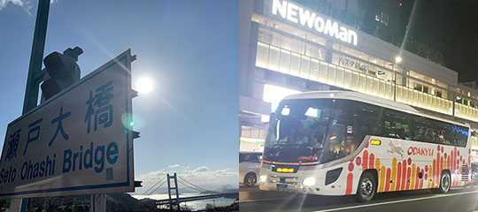
19:00
20:30
- 1 日目
- 車両点検・点呼・出庫
- 車両点検を行い、アルコールチェック、そして出庫点呼を行います。運行管理者よりルート上の注意箇所や現地の天候・渋滞情報など、必要な指示を受け出庫します。
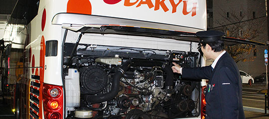
19:30
21:00
- 1 日目
- バスタ新宿 出発！！
- お客様の受付をして座席番号などのご案内をします。お客様に乗車いただき全国各地に向けて出発します。運行中は途中の指定サービスエリアで交替しながら運行します。運転しない時は、車内にある足をのばして仮眠できるスペースで休憩を取ります。
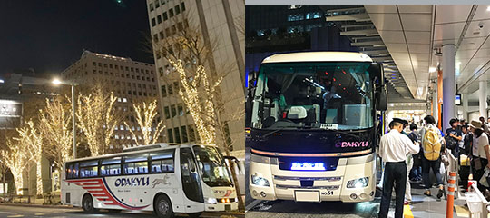
20:35
22:05
- 2 日目
- 到着
- 現地の各バス停でお客様が降車されます。忘れ物が無いか確認して指定の車庫へ。車庫到着後、現地で『お疲れ様でした』と運行管理者より点呼を受け宿舎に向かいます。現地にも美味しい食堂が色々ありますよ。食事をしたら睡眠をしっかりとり休憩します。
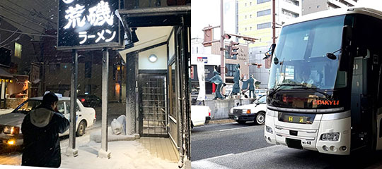
6:40
7:25
- 2 日目
- 現地出発
- 宿舎より現地の車庫へ移動し出発の支度をします。運行管理者より点呼を受けて、東京に向けて出発します。帰路も指定サービスエリアで交替しながら運行します。
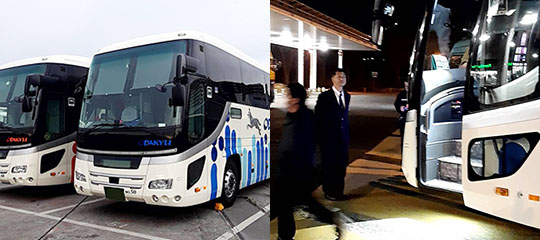
22:20
20:20
- 3 日目
- バスタ新宿到着
- お客様が降車されます。長距離の運転ですが、降車時には『運転士さん有難う御座いました』と沢山のお客様が声をかけて下さいますよ。
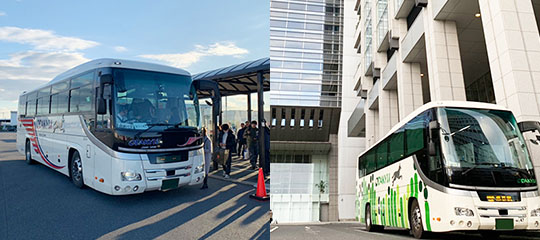
7:00
7:20
- 3 日目
- 入庫
- 入庫後、終了点呼を受け業務終了です。長距離ですが2名乗務で協力しながら運転をするので、3日間で運転時間はおおよそ10時間から12時間ほど、午前中には帰宅出来ますよ。3勤1休なので通常シフトでは翌日休日になります。
8:00
8:30
- 3 日目
- 退勤
- 3勤1休なので、翌日はお休みです。午前中には帰宅でき翌日休みなので、体も楽ですよ。
8:30
9:00
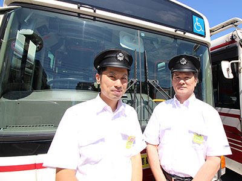
- お客様からの感謝の言葉
- SAでの休憩中や目的地到着後、お客様に「ありがとうございました。」「運転お疲れ様でした。」とお声がけいただくことがあります。そういったねぎらいの言葉をいただけることはとてもうれしいです。

- 新しい車両に乗れる
- 高速バスは路線バスよりも車両の入れ替えが早く、比較的新しい車種に乗ることができます。新しい設備や機能などをいち早く体感できることがうれしいです。

勤務例（1乗務18時間が基本です。）
- 出社
- 出社してすぐにアルコールチェックを行います。

7:30
- 着替え
7:35
- 車両点検・点呼
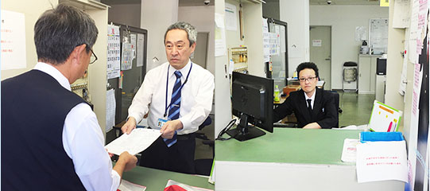
7:40
- 出庫
- 勤務中は好きな時間に合計2.5時間の休憩・仮眠を取ることができます。

8:00
- 帰庫
- 帰庫後、洗車・入金（売上金の提出）、自動日報の提出をします。
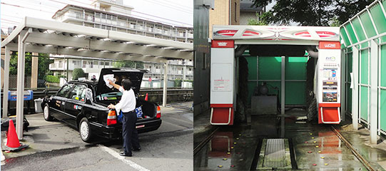
25:30
- 退社
- 退社時に再度アルコールチェックを行います。
26:00
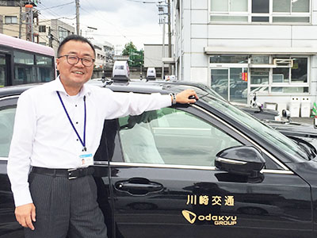
- お客様とのコミュニケーション
- 様々なお客様に出会い、コミュニケーションを図ることで、仕事がマンネリにならず、日々新鮮な気持ちで仕事ができます。
- 地域の方々のために
- 通勤・通学・通院・お買い物等、日々地域の方々の足となることでお役に立っているという充実感が得られます。